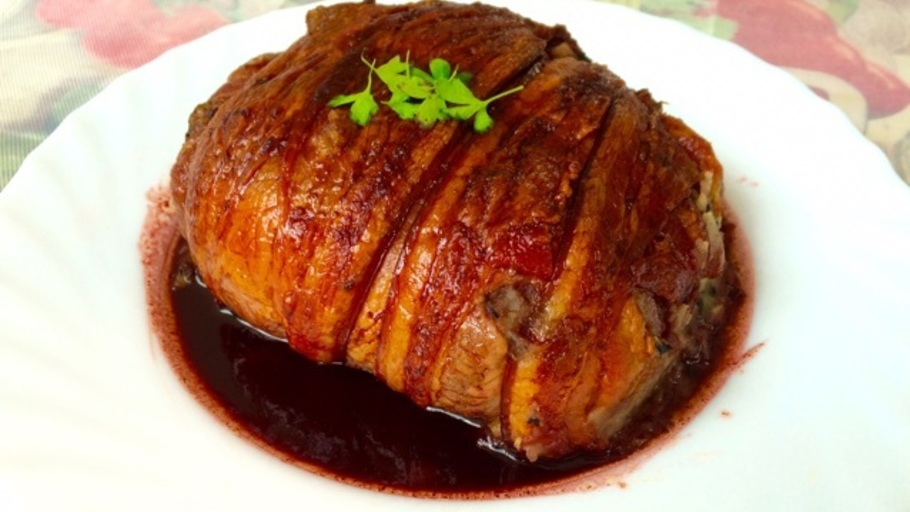

Pastelon

wipe yourself up. you're drooling
Ingredients
- 1 potato
- ALL the bacon
- 3 tbsp of your favorite high-temp oven-safe cooking oil
Step
- Man listen. Wash your potato. Poke some small holes all around it. Wrap that thing in as much bacon as YOU see fit. Drizzle the oil all around. Then bake for 30mins @ 350 and call it a day.